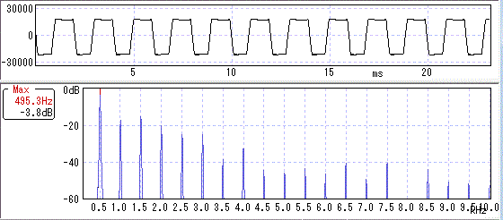
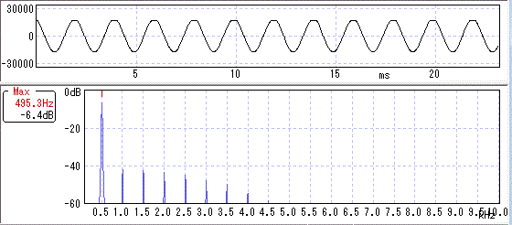
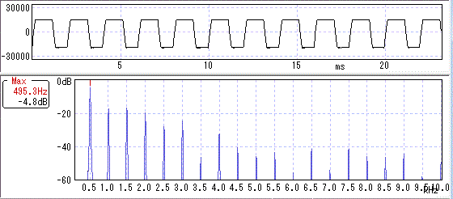
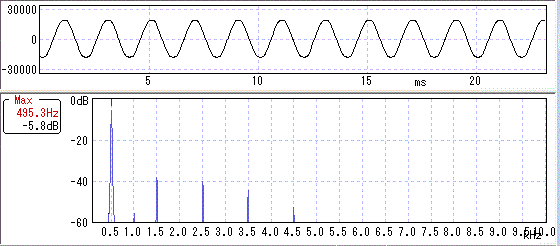
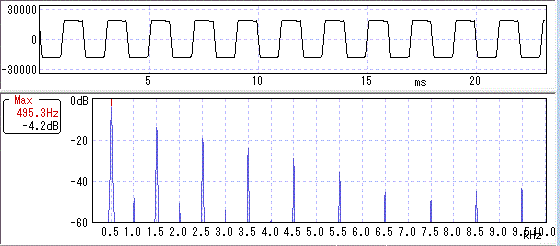

歪みと波形・倍音その4（オペアンプ）
2014年11月01日 カテゴリー：歪みと波形・倍音
TUBUNATORのオペアンプをいろいろ変更して波形・倍音を調べました。
歪みと波形・倍音 記事一覧
【OPA2134】
（ローゲイン）
奇数次倍音と偶数次倍音が同じぐらい出てきています。クリップの仕方に丸みはありません。
（ハイゲイン）

やはり奇数次倍音と偶数次倍音が同じぐらいです。波形も角ばっています。
【TLC272】
（ローゲイン）

（ハイゲイン）

ローゲイン、ハイゲインともにOPA2134に似た波形になりました。（ただ、このオペアンプは入手しにくいように思います。どこで買ったか忘れました。）
【LM4562】
（ローゲイン）

（ハイゲイン）

ローゲイン、ハイゲインともに偶数次倍音が全然出ていません。
その他LMC6032、LMC662、NJU7032も調べましたが、LM4562と似たような波形となりました。
・総評（のようなもの）
オペアンプによっては偶数次倍音が出やすいものがあるとわかりました。しかしながら、なかなか真空管並に偶数次倍音が豊富というわけにはいかないようです。トランジスタやダイオードを用いた歪みでは角ばったクリッピングになるためだと思います。やはり真空管の音は他では真似できないということですね。